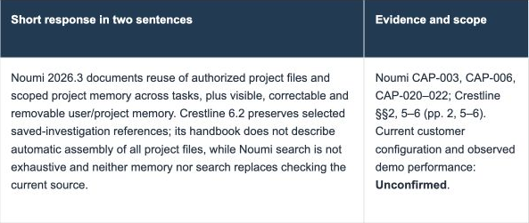

Turn AsterVale’s competitive comparison into an internal Markdown battlecard using our template. Cover the five questions most likely to influence the customer’s decision, with concise answers, demonstration points, follow-up questions and boundaries on what we can promise.
Noumi
Found 5 files connecting buyer priorities to documented product differences and response limits.
- Buyer priorities:
 AsterVale_Opportunity_Brief.md
AsterVale_Opportunity_Brief.md - Compared requirements:
 AsterVale_Product_Comparison_Noumi_vs_Crestline.xlsx
AsterVale_Product_Comparison_Noumi_vs_Crestline.xlsx - Noumi capability evidence: Noumi_Product_Capabilities.md
- Crestline version boundaries:
 Crestline_Product_Documentation.pdf
Crestline_Product_Documentation.pdf - Answer and proof structure: Competitive_Battlecard_Template.md
Noumi used your saved preference

The same answer retains product editions, CAP references and an “Unconfirmed” evidence boundary.
Keep the source and product version beside each claim; mark capabilities not established by the documentation as “Unconfirmed”.
DONECompleted
5 source files selected · 1 deliverable shown. Previews below are rendered from the supplied files.
Prepared an internal Markdown battlecard with five decision questions, concise answers, proof points and follow-up questions.
Focus: source versions and Unconfirmed labels distinguish documented differences from customer test results.
Crestline’s governance and SCIM strengths remain visible; source-listed prices need current quotes and comparable scope.
Next: reconcile source dates, verify open claims with their owners and rehearse the proof checks before the customer discussion.